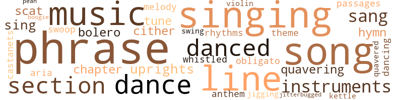
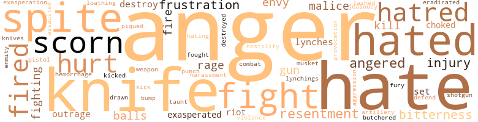
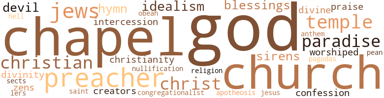

Stranger and Alone, by Redding, J. Saunders (1989)
137 music-related terms matched in this text.
Most frequent terms in this topic: phrase (16); singing (15); music (12); song (11); line (9)
aria.n.01
Definition: an elaborate song for solo voice
| word | sentence |
|---|---|
| aria | Her voice went higher with each question ; it was as if she were singing an aria . |
bolero.n.01
Definition: music written in the rhythm of the bolero dance
| word | sentence |
|---|---|
| bolero | " But get me my bolero first . |
| bolero | Howden did not see that the bolero made any difference because it was sleeveless like the dress , and it did not cover her bare midriff either . |
bones.n.01
Definition: a percussion instrument consisting of a pair of hollow pieces of wood or bone (usually held between the thumb and fingers) that are made to click together (as by Spanish dancers) in rhythm with the dance
| word | sentence |
|---|---|
| castanets | Then , her bounce completely re - covered , " Nighty-night , " she said cheerily , and her heels clicked like castanets as she skipped up the walk . |
boogie.n.01
Definition: an instrumental version of the blues (especially for piano)
| word | sentence |
|---|---|
| boogie | Now there was swing music and hot music , and people jitterbugged and jumped the boogie and rug-cut . |
chapter.n.01
Definition: a subdivision of a written work; usually numbered and titled
| word | sentence |
|---|---|
| chapter | " He said the local chapter of L.I.C. - " " Good Lord , that again ! " |
| chapter | " There 's been a local chapter for a long time , Judge , but they 're just holding meetings again . " |
dance.n.01
Definition: an artistic form of nonverbal communication
| word | sentence |
|---|---|
| dances | Every day in the week and twice on Sunday there were chapel exercises , but these did not interfere with the dances , the parties , and the elegant , formal quarterly balls . |
| dance | " Come on , Shel , dance with me . " |
| dance | Come on , Shel , let 's dance . " |
| dances | The flyers and illustrated bulletin , which showed unrecognizable , retouched views of the campus and which had been sent to every colored teacher in three states , stressed the slogan " Learning with Pleas - ure , " so Howden found himself busy with the details of the weekly lyceum and talent night , the Saturday-night dances in the gym , the sightseeing tour to Hangman 's Point , and picnics in the grove on the bluff . |
| dances | And there were the words apd music of songs floating across the campus in the tremulant spring night air , floating from student dances in the dining hall , floating from the throats of boys serenading girls on the porches of dormitories . . . We 've danced the whole night through . . . " All alone , I 'm so all alone . |
| dances | He could remember how jazz and the crazy dances of the time following the last war seemed to make many people somewhat mad . |
dance.v.02
Definition: move in a pattern; usually to musical accompaniment; do or perform a dance
| word | sentence |
|---|---|
| dancing | Two or three couples were dancing in the hall , and Howden stood there watching them . |
dance.v.03
Definition: skip, leap, or move up and down or sideways
| word | sentence |
|---|---|
| dance | " I want to dance , " she said . |
| danced | They went out into the hall and danced . |
| danced | They danced down the hall . |
| danced | They danced up the hall . |
| danced | They danced . |
| danced | They could scarcely hear the music , but they danced . |
| danced | And there were the words apd music of songs floating across the campus in the tremulant spring night air , floating from student dances in the dining hall , floating from the throats of boys serenading girls on the porches of dormitories . . . We 've danced the whole night through . . . " All alone , I 'm so all alone . |
hymn.n.01
Definition: a song of praise (to God or to a saint or to a nation)
| word | sentence |
|---|---|
| hymn | A col - lection of darkies will listen quicker to a blue suit and big words than to a common meter hymn , " the president said , snorting with laughter . |
| anthem | When he had finished , everybody sang the state anthem and " The Star-Spangled Banner . " |
| hymn | A class somewhere in the building was singing a hymn , and he could hear the childish voices ringing with a thin , hard plangency . |
jig.v.01
Definition: dance a quick dance with leaping and kicking motions
| word | sentence |
|---|---|
| jigging | Marge had Sam Seeny in the middle of the floor showing him a new dance step , and Sam was jigging and weaving awkwardly with the frantic concentration of the drunk . |
jitterbug.v.01
Definition: do the jitterbug
| word | sentence |
|---|---|
| jitterbugged | Now there was swing music and hot music , and people jitterbugged and jumped the boogie and rug-cut . |
kettle.n.04
Definition: a large hemispherical brass or copper percussion instrument with a drumhead that can be tuned by adjusting the tension on it
| word | sentence |
|---|---|
| kettle | They would come knocking timidly at his bed - room door at seven-thirty or a quarter to eight to bring him a kettle of warm water and to inform him that breakfast would be ready soon , and there he 'd be , washed , shaved , dressed , and quietly getting the day straight before him . |
music.n.01
Definition: an artistic form of auditory communication incorporating instrumental or vocal tones in a structured and continuous manner
| word | sentence |
|---|---|
| music | Above the music , which played bravely on , came the piercing scream of sirens on the escorting motorcycles topping the em - bankment and roaring down the road between the canefields and the faculty houses . |
| music | He could hear the voices , which seemed to be getting louder in the living room , and music from the radio . |
| music | The music was just loud enough for them to hear it . |
| music | They could scarcely hear the music , but they danced . |
| music | He had the same feeling that came to him when he heard certain kinds of music : he could not get it through his head that it was as casually played as it sounded . |
| music | And there were the words apd music of songs floating across the campus in the tremulant spring night air , floating from student dances in the dining hall , floating from the throats of boys serenading girls on the porches of dormitories . . . We 've danced the whole night through . . . " All alone , I 'm so all alone . |
| music | Howden saw them standing on corners and going in and out of the poky little joints where they sold beer and pickled pigs ' feet and juke box music and where the sports hung out to ogle any women passing by . |
| music | When the music changed , everyone stood up , pushing back the rented collapsible chairs , and looked toward the door from the hall . |
| music | The " hot " music and the out - landish cut of " zoot suits " and the jitterbugging and the religious sects that went in for snake-handling were all part of it . |
| music | Back then there was jazz music and the Black Bottom and the Charleston and something called the Boston . |
| music | Now there was swing music and hot music , and people jitterbugged and jumped the boogie and rug-cut . |
| music | Now there was swing music and hot music , and people jitterbugged and jumped the boogie and rug-cut . |
musical_instrument.n.01
Definition: any of various devices or contrivances that can be used to produce musical tones or sounds
| word | sentence |
|---|---|
| instruments | Her instruments lay scattered about . |
| instruments | Howden envied her those instruments , which were not the cheap tin kind you bought for a dollar and a quarter , but fine-edged , tempered steel scalpels and tweezers and knives that fitted into a velour-lined leather case . |
| instruments | Rising , she slipped off her smock and folded it , stooped , and threw it in the locker where her case of instruments and her own personal microscope were . |
obbligato.n.02
Definition: a part of the score that must be performed without change or omission
| word | sentence |
|---|---|
| obligato | He had no idea that over the libretto of her words he was playing a romantic obligato . |
paean.n.02
Definition: (ancient Greece) a hymn of praise (especially one sung in ancient Greece to invoke or thank a deity)
| word | sentence |
|---|---|
| pean | Undoubtedly your own ancestors in Africa - until the Euro - pean came along and taught them different , " he threw in paren - thetically , smirking - " thought that no magic was as strong as their black magic and no spirit as potent as their Obeah . " |
passage.n.06
Definition: a short section of a musical composition
| word | sentence |
|---|---|
| passages | He found himself anticipating passages that needed emphasis , the places that called for an appreciative pause . |
phrase.n.02
Definition: a short musical passage
| word | sentence |
|---|---|
| phrase | A phrase of her own came back into his mind . |
| phrase | Shelton Howden did not phrase it so , did not pick out the items thus ; but he did think of the Old Man as a cat . |
| phrases | The faculty were all conversant with the old , acidulous opinions of Dr. W. E. B. DuBois and with the new , bitter ones of Mr. Wal - ter White and Mr. Curtis Flack , and their conversations crackled with these men 's thoughts , their striking phrases . |
| phrase | Now he felt drugged , even while his mind sorted out the despicable images that the phrase " white man 's nigger " invoked . |
| phrases | Although he stood but a few feet away , Howden could catch only scattered phrases of it : " . . . the honor of your presence . . . the small resources of a grateful people . . . which you were instrumental . . . " The Governor stood there looking down on him with an indulgent smile . |
| phrase | That phrase kept running through his mind - " And if he does n't do something about it , I ca n't " - and he was wondering again why she could n't . |
| phrase | The phrase " all right " was an intensive the way he used it . |
| phrase | Although it was not generally known , it was Howden who cre - ated the phrase " One Teacher-One Goal " when Dr. Doraman found it necessary to defend against attack by a radical Negro element the continuance of one-room Negro schools in the face of the extensive consolidation of white schools . |
| phrase | The phrase jarred on him . |
| phrase | For him New Hope was a kind of laboratory in which he could study the Negro at close range and so document his articles with the telling phrase , " As I observed . . . " He had quite a reputation among scholars ; his articles on race were always being quoted somewhere . |
| phrases | Howden could recall a great many things the Old Man had said from time to time , and now those phrases were running sluggishly through his mind again . |
| phrase | The slang phrase came strangely through Nan 's voice , but Howden knew she was n't using it in that way . |
| phrase | Into his mind out of nowhere came a phrase that he had heard earlier in the evening : " Do you know what time it is on the clock of the world ? " |
| phrase | No one seemed to understand that that phrase of Curtis Flack 's , which , doubtless , he had thought up in the isolated se - curity of the national office of L.I.C. , was just meaningless rhetoric . |
| phrase | When he was a graduate student at the University in New York , he had heard a professor say sneeringly that the phrase " lost generation " was just a poetic rationalization of failure - and Howden could well believe it . |
| phrase | And then a phrase came into Howden 's mind . |
| phrase | There would be - he re - membered the phrase from somewhere - a return to normalcy . |
| phrases | All those phrases of Curtis Flack 's were back in his mind . |
| phrase | | As he parked his car in The Chute and started walking toward town , Howden was thinking of that phrase again . |
| phrase | The clock had not run for years , but that phrase was back in his mind , though he was only half thinking of it . |
rhythm.n.04
Definition: the arrangement of spoken words alternating stressed and unstressed elements
| word | sentence |
|---|---|
| rhythms | Occasionally the Old Man would come out with some whimsy or , his voice as abrasive as a file , with something so unexpected and perverse that Howden 's mind was teased to working and his tongue to reluctant speech ; but more often the endless , disjointed , and anecdotal talk created a hypnosis in which Howden did not hear words at all but only felt their content , as if the intonations , inflections , and rhythms alone had meaning and significance . |
scat.n.01
Definition: singing jazz; the singer substitutes nonsense syllables for the words of the song and tries to sound like a musical instrument
| word | sentence |
|---|---|
| scat | She sat very straight , with the backs of her legs pressed against the front edge of the scat and her feet close together . |
| scat | The other man was just going to Pittsburgh and decided to take a train , but the people at the airport in Harrisburg assured Flack that they would find a scat for him on a later flight . |
section.n.01
Definition: a self-contained part of a larger composition (written or musical)
| word | sentence |
|---|---|
| section | The upper section of the room was murmurous with the subdued voices of students in general biology . |
| section | In The Chute , as the main Negro street - and , in fact , the whole section - was called , quite a few dressed-up-for-Sunday darkies loitered . |
| section | Raising himself a little higher on the pillow , he turned to that section of the magazine called " People and Things , " and then he heard Nan 's voice again . |
| section | He was reading through a digest , trying to find a springboard from which to leap into the concluding section of his paper . |
| section | It had a section called " Culture for the Suc - cessful Man " which , month after month , showed the same distinguished-Iooking gentleman of early middle years absorbing or about to absorb some kind of culture . |
| section | There was also a section on clothes for the successful man and one on health for the successful man . |
sing.v.02
Definition: produce tones with the voice
| word | sentence |
|---|---|
| sing | He wanted to sing that song too . |
| sang | Then , led by the matron , whose voice was beginning to crack , the greenies sang songs , college songs , haltingly at first , but with great certainty and sincerity and verve as they learned the words and lost their shyness . |
| singing | Her voice went higher with each question ; it was as if she were singing an aria . |
| sang | The " Hep , hup , hep " of the leaders sang out on the April air , but there was no verve or zip . |
| sang | When he had finished , everybody sang the state anthem and " The Star-Spangled Banner . " |
| sing | The purple shadow of the bluff was creeping across the campus , and the early summer evening was beginning to sing its melan - choly song . |
| singing | Somebody was singing to the accompaniment of the radio , and over in a corner a man was saying something that made the women around him squeal with shocked delight . |
| singing | A class somewhere in the building was singing a hymn , and he could hear the childish voices ringing with a thin , hard plangency . |
| singing | They were singing with those elisions and slurpy mouthings of syllables that always seemed to him so sloppy and gross . |
singing.n.01
Definition: the act of singing vocal music
| word | sentence |
|---|---|
| singing | They saw no one , but they heard the horn braying raucously and several voices singing madly out of key . |
| singing | It strained and pitched against singing hawsers that stretched out of sight into eternity . |
| singing | He was thinking of that song that all the radio en - tertainers were playing and singing : " When the Lights Come On Again . " |
| singing | Howden must have heard the singing before he finished parking his car on the edge of the ragged schoolyard , but he was not really aware of it until he stepped into the bare front hall . |
| singing | It was no time for any kind of singing . |
| singing | But now , walking down the hall where great sections of the ceiling were naked to lathing and joists and where children 's coats and grimy , rat-gnawed sweaters and greasy paper bags of lunches hung from nails in the wall on both sides , he found himself shifting his hat to the hand that held the brief case , and the next moment he was opening the raw pineboard door to the room from which the singing came . |
| singing | The teacher 's back was toward the door , but the children stared at him , their singing faltering . |
| singing | It had nothing to do with the singing , nothing really to do with her . |
| singing | " You disturb the whole school when you have a class singing at this time of day . |
| singing | If you have a lesson plan , then what are you doing singing at - " he glanced down at his watch again - " at eleven-fifty in the morning ? " |
| singing | Follow your lesson plan and stop this business of singing at all hours . " |
song.n.01
Definition: a short musical composition with words
| word | sentence |
|---|---|
| song | Somewhere a group of male voices had struck up a song and were sending it floating across the campus . |
| song | He was still hearing that song , still savoring the sweetness of its promise . |
| song | He wanted to sing that song too . |
| song | Though at the height of the festivities there must have been three hundred people crowded in the small audi - torium , and caterer 's assistants in white monkey jackets dodged about with trays of punch and ice cream , and there was a great babble even without one of the traveling New Hope quartets which kept breaking into song , Mr. Tillet was easy to see and to hear . |
| song | Up on the platform , the quartet - three fat black men and a lean yellow one , who had been melodiously soliciting funds for New Hope for twenty years - broke into a rollicking song . |
| song | Everyone paused to watch and listen because the quartet was very funny in this song . |
| songs | Then , led by the matron , whose voice was beginning to crack , the greenies sang songs , college songs , haltingly at first , but with great certainty and sincerity and verve as they learned the words and lost their shyness . |
| songs | Then , led by the matron , whose voice was beginning to crack , the greenies sang songs , college songs , haltingly at first , but with great certainty and sincerity and verve as they learned the words and lost their shyness . |
| songs | The songs sounded sweet and melancholy to Howden . |
| song | However , it had a curious effect outside - as the college song put it - those " sacred walls . " |
| song | At a barely perceptible signal from the president , the band struck up " Happy Days Are Here Again , " which made the Gov - ernor and his party laugh with unrepressed delight because it was the tune of the old campaign song . |
| songs | And there were the words apd music of songs floating across the campus in the tremulant spring night air , floating from student dances in the dining hall , floating from the throats of boys serenading girls on the porches of dormitories . . . We 've danced the whole night through . . . " All alone , I 'm so all alone . |
| song | He was thinking of that song that all the radio en - tertainers were playing and singing : " When the Lights Come On Again . " |
| song | Then he found himself thinking about the war , and then the plaintive words of that song were running through his head again . |
| song | And that popular song was somewhere in the back of his mind too . |
swing.n.05
Definition: a style of jazz played by big bands popular in the 1930s; flowing rhythms but less complex than later styles of jazz
| word | sentence |
|---|---|
| swing | Now there was swing music and hot music , and people jitterbugged and jumped the boogie and rug-cut . |
swoop.n.01
Definition: (music) rapid sliding up or down the musical scale
| word | sentence |
|---|---|
| swoop | He saw Gerry 's shining eyes swoop first at Flash Hoggard and then at him . |
theme.n.03
Definition: (music) melodic subject of a musical composition
| word | sentence |
|---|---|
| theme | The banter , exchanged constantly during periods of leisure , usually developed around this inexhaustible theme . |
tune.n.01
Definition: a succession of notes forming a distinctive sequence
| word | sentence |
|---|---|
| melody | Howden knew the melody , but the words , drifting through the purple dusk , were strange to him and full of sweet , sad meaning , like a kept promise . |
| line | At one end of the lawn a line of silver poplars separated the campus from the farm - land , and across the campus walk , which divided the lawn , stood the monumental shaft above old Jubal Hooker 's grave . |
| line | " What kind of a line is that ? |
| line | Do you think you have to hand me some kind of line ? " |
| tune | The asthmatic horn had gone into another tune , the voices following it stridently . |
| line | " He just wants to keep them in line . " |
| line | But the fellow ahead of him was busy talking to the one next in line . |
| line | He wanted to master the situation , to keep Kelly in line . |
| line | Windows gleaming , shades all in line , the faculty houses beyond the fill passed the president 's last rigid inspection at nine o'clock on the morning of the day . |
| lines | " Give these lines some balance . |
| lines | And give these lines some balance ! |
| tune | At a barely perceptible signal from the president , the band struck up " Happy Days Are Here Again , " which made the Gov - ernor and his party laugh with unrepressed delight because it was the tune of the old campaign song . |
| line | Waiting for a freight train to pass , a line of cars was stopped at the city end of the bridge . |
| line | Abstract thought was not at all his line . |
| lines | Do n't mention to Poppa that I 've been to Boston - and keep sweet , honey - Love - G. Howden found himself reading certain lines again , hunting for them almost furtively , as if they were in a message addressed to someone else . |
| lines | He grinned at her suddenly , affectionately , his moon of a face cracking into a dozen lines . |
upright.n.02
Definition: a piano with a vertical sounding board
| word | sentence |
|---|---|
| uprights | Now , with her feet hooked around the forward uprights of her stool , she sat up straight and her face relaxed . |
| uprights | For a moment he clung to one of the uprights of the bunk , but his arms turned to water , his thighs to rubber ; his knees collapsed . |
violin.n.01
Definition: bowed stringed instrument that is the highest member of the violin family; this instrument has four strings and a hollow body and an unfretted fingerboard and is played with a bow
| word | sentence |
|---|---|
| violin | Someone was shouting for a game of pinochle , and someone else was practicing on a violin , patiently repeating a difficult chord . |
warble.v.01
Definition: sing or play with trills, alternating with the half note above or below
| word | sentence |
|---|---|
| quavering | He kept his voice from quavering . |
| quavering | Guffaws of laughter , quavering through the steely clat - ter of the moving train , came to him from the dining car . |
| quavered | I think - " She had been speaking quietly , with control , but now , as she looked at him , her voice quavered and she bit her lips . |
whistle.v.01
Definition: make whistling sounds
| word | sentence |
|---|---|
| whistled | Their boots thud - ded against the loose stones ; their sweat - and dirt-stiffened clothes creaked ; the stubble whistled dryly against their legs . |
zither.n.01
Definition: a musical stringed instrument with strings stretched over a flat sounding board; it is laid flat and played with a plectrum and with fingers
| word | sentence |
|---|---|
| cither | Then she wanted to know if Howden knew Mattie , the girl who worked for her sister , or Mattie 's man cither . |
| cither | " Curt was bumped once , and they found a place for him to stay all right , and it was n't in the South cither , " Alice said . |
192 violence-related terms matched in this text.
Most frequent terms in this topic: anger (19); hate (14); knife (11); hated (10); spite (9)
abhorrence.n.01
Definition: hate coupled with disgust
| word | sentence |
|---|---|
| loathing | " The thing is , " the Old Man said , " that our fathers begot us in scorn and loathing , and we 'll go on avenging ourselves on our mothers until we die . " |
aggravation.n.01
Definition: an exasperated feeling of annoyance
| word | sentence |
|---|---|
| exasperation | " But why ? " she persisted , an edge of exasperation in her voice . |
aggravation.n.02
Definition: unfriendly behavior that causes anger or resentment
| word | sentence |
|---|---|
| provocation | There would be pictures of colored veterans who , still in uniform , had been assaulted without provocation by white hoodlums or white policemen in Charleston or Savannah or Memphis or Carthage . |
aggression.n.01
Definition: a disposition to behave aggressively
| word | sentence |
|---|---|
| aggression | She walked with a kind of tensive aggression , as if moving through a medium heavier than air , but easily , quickly . |
anger.n.01
Definition: a strong emotion; a feeling that is oriented toward some real or supposed grievance
| word | sentence |
|---|---|
| Anger | " Anger and bitterness are not for such as you . |
| anger | The day you came here , the moment you registered as a freshman , you renounced the luxury of futile anger . " |
| Anger | Anger did him no good . |
| anger | What - ever ambition , whatever hope , whatever talent he has may be destroyed by his anger . " |
| anger | " But , sir , it 's not anger I feel , " Howden said . |
| anger | Then her shoulders lifted and her mouth tightened and her eyes blazed up , whether with surprise or anger he could not tell . |
| anger | Suddenly he felt a kind of anger against her . |
| anger | " I was n't adding two and two , " he said , disturbed , made mis - erable by her anger . |
| anger | Her eyes filled with tears of anger and outrage . |
| anger | His eyes filled with disappoint - ment , revulsion , anger as he looked at Thompson . |
| anger | Almost without anger , something auto - matic and reflexive . |
| anger | His voice quickened as in relished anger . |
| anger | Let 's do n't say anything about it ! " the voice said in fierce anger , suddenly . |
| anger | He felt an unreasonable kind of anger . |
| anger | He was conscious only that he had not aroused Kelly at all , and his anger demanded that token . |
| anger | Kiss me , you fool ! " she commanded with bright and savage anger , jerking at his lapels . |
| anger | " Now look here , Nan , " he began with defensive anger , and then everything seemed to go out of him except a feeling of guilt and a sense of her wretchedness . |
| anger | But the anger must have fled , for she started to cry . |
| anger | He experienced a sense of black anger at the student for taking the discussion out of the realm of the academic , for making it something real . |
| anger | The tone of Pretlow 's voice made Howden glance at him sharply , with a new surge of anger . |
anger.n.02
Definition: the state of being angry
| word | sentence |
|---|---|
| anger | A shadow sometimes passed over Valrie 's face , but she never evinced any anger or impatience . |
anger.v.02
Definition: become angry
| word | sentence |
|---|---|
| angered | The stupidity of the question angered him . |
| angered | Somehow the century of misery in the wizened black face angered Howden , and he kept his eyes averted . |
| angered | The calm concession angered Howden . |
| angered | Howden flushed slowly , newly angered by Pretlow 's presump - tuousness . |
| angered | He looked dumbly around , trying to think of something , trying not to look at his room - mate , further angered because he knew Thompson was looking to him , waiting for him , depending on him . |
assail.v.01
Definition: attack someone physically or emotionally
| word | sentence |
|---|---|
| assaulted | There would be pictures of colored veterans who , still in uniform , had been assaulted without provocation by white hoodlums or white policemen in Charleston or Savannah or Memphis or Carthage . |
bleeding.n.01
Definition: the flow of blood from a ruptured blood vessel
| word | sentence |
|---|---|
| hemorrhage | Howden 's feeling of long-suffering patience was just begin - ning to relax when Thompson had another hemorrhage . |
bump.n.01
Definition: a lump on the body caused by a blow
| word | sentence |
|---|---|
| bump | And even if he had them , he asked himself , what would he do after he got there - sit around like a bump on a log , watching all the others having a good time ? |
butcher.v.01
Definition: kill (animals) usually for food consumption
| word | sentence |
|---|---|
| butchered | The president himself selected the pigs to be barbecued , and after the terrified squeal , the plunge of the knife , the wobbly , buckle-legged stagger while the blood ran , stayed to see them properly scraped and butchered . |
contemn.v.01
Definition: look down on with disdain
| word | sentence |
|---|---|
| scorn | " The thing is , " the Old Man said , " that our fathers begot us in scorn and loathing , and we 'll go on avenging ourselves on our mothers until we die . " |
| scorn | The word came with ugly , drawn-out scorn . |
| scorn | When the Old Man himself read the editorial , he snorted scorn - fully and told Howden to take it easy ( he was picking up his daughter 's slang ) and not to worry , because he could handle any - thing that came up . |
| scorn | Howden felt nothing but scorn for Spillman and George . |
| scorn | Howden repeated scorn - fully . |
| scorn | The scorn was there , but the fear was there also . |
| scorn | " Professor , " he said , giving the title an edge of scorn , " I want to tell you something . |
destroy.v.04
Definition: put (an animal) to death
| word | sentence |
|---|---|
| destroy | If we were , there 'd be no balance in the thing , and the race men 's madness would destroy us all . |
| destroyed | In a childish , futile rage , he took the books one by one and destroyed them , tearing cover from binding and leaf from leaf and littering the floor with paper . |
| destroy | Setting themselves up in opposition to the old workable pattern , they were trying to destroy it . |
draw.v.23
Definition: pull (a person) apart with four horses tied to his extremities, so as to execute him
| word | sentence |
|---|---|
| drawn | A man in a big leather apron was tossing stiff bundles of dried pelts into a hand cart drawn up in front of the little place that dealt in raw hides . |
eliminate.v.03
Definition: kill in large numbers
| word | sentence |
|---|---|
| eradicated | ( Curtis Flack began to laugh quietly because it really was amusing , he said , although it was sad too , for the whole thing represented something fundamental , something stubborn and evil that would have to be eradicated before the legions of progress could advance . |
envy.n.01
Definition: a feeling of grudging admiration and desire to have something that is possessed by another
| word | sentence |
|---|---|
| envy | Unrealized by Shelton Howden , there were forces of knowl - edge and acceptance and compromise , of wonder and speculation and doubt , of wish and dream and ambition , of envy and resent - ment and pride , shaping noiselessly , scoring indelibly the still flexible contours of his mind . |
| envy | Some of the young men left the porch to join them and stroll out of sight , and Howden was stung with envy . |
| envy | He was above man 's malice , beyond envy , topping the stars ! |
fight.n.02
Definition: the act of fighting; any contest or struggle
| word | sentence |
|---|---|
| combat | Howden saw her friends look at him and then at her , and he felt that his will was caught up in combat against theirs and against Valrie 's also . |
| fighting | " But you go on fighting , Curt , " Alice said , " and that 's the im - portant thing . " |
| fighting | " Yes , " Flack said , with a sudden tightening of the tired lines around his mouth , " I go on fighting . |
fight.n.05
Definition: a boxing or wrestling match
| word | sentence |
|---|---|
| fight | White man call you , it 's all right ; nigger call you , you want ' a fight . |
| fight | It made Walter an enemy of the kind you could not openly de - clare against or openly fight , but an enemy nevertheless . |
| fight | If you goin ' a fight , fight . |
| fight | If you goin ' a fight , fight . |
fight.v.02
Definition: fight against or resist strongly
| word | sentence |
|---|---|
| defend | Although it was not generally known , it was Howden who cre - ated the phrase " One Teacher-One Goal " when Dr. Doraman found it necessary to defend against attack by a radical Negro element the continuance of one-room Negro schools in the face of the extensive consolidation of white schools . |
| fight | " With that arm , " one of the doctors told him , " you could n't fight your way out of a paper bag . " |
| fight | He had no wish to fight . |
| fight | You 're not fight - ing it , " Howden told her . |
| fought | The drawers and closets in the back bedroom were full of things too : pewter pitchers and cruets and crockery vases and camphor-smelling quilts and old illustrated books about " illustrious Negroes " and about Negroes in all the wars the United States had fought . |
| fighting | " Pretty soon you realize that while you 're fighting it , you 're breathing it in . |
| fight | Then you do n't fight any more . |
frustration.n.03
Definition: a feeling of annoyance at being hindered or criticized
| word | sentence |
|---|---|
| frustration | Scarcely knowing what he was doing , but feeling somehow a hot wave of love topping a black trough of frustration , feeling somehow that what he worshiped he longed madly now to degrade , Howden clasped her tighter . |
| frustration | They had never learned , or would never acknowledge that there was nothing to be solved but the problems of their own frustration . |
| frustration | As he picked up a sheaf of summer school data from his desk , a sense of frustration took hold of him . |
| frustration | Among his jumbled feelings he recognized frustration . |
fury.n.01
Definition: a feeling of intense anger
| word | sentence |
|---|---|
| rage | In a childish , futile rage , he took the books one by one and destroyed them , tearing cover from binding and leaf from leaf and littering the floor with paper . |
| fury | He could see that her eyes blazed with fury . |
| rage | An unreasonable rage gripped him . |
| rage | In a blind rage , Howden 's fists beat down into the shocked face . |
gag.v.06
Definition: cause to retch or choke
| word | sentence |
|---|---|
| choked | The judge choked and sputtered and heaved mas - sively in his chair . |
| choked | " Old Sher ' uf Milner , " the judge choked . |
gun.n.01
Definition: a weapon that discharges a missile at high velocity (especially from a metal tube or barrel)
| word | sentence |
|---|---|
| gun | " We ai n't no more trouble , Chef , then it take to get a rope and a gun . " |
| gun | " We ai n't no more trouble , Chef , then it take to get a rope and a gun . " |
| Gun | Later there would be stories of job lay-offs , and all the nigger papers would blossom with the sym - bolic drawing of a dejected darky in the tattered remnants of a uniform : " You Gave Him a Gun - Now Give Him a Job ! " |
harassment.n.01
Definition: a feeling of intense annoyance caused by being tormented
| word | sentence |
|---|---|
| harassment | From the first , Shelton Howden had been aware of the atmosphere of worry and harassment that clung to his thirty - five colleagues , and as the weeks passed , he came to recog - nize it as the stable condition of their existence . |
hate.n.01
Definition: the emotion of intense dislike; a feeling of dislike so strong that it demands action
| word | sentence |
|---|---|
| hatred | No one interrupted him , no one asked a question , but he knew that he was getting a response , and the resentment and hatred he felt in the taut-eyed muteness of the class made no difference to him . |
| hate | When - ever Clarence Brown crossed the room to have a word with her , Howden filled with misery , flamed with jealous hate . |
| hatred | Sensing this , the crew members too became more venomous , their hatred of Howden more open . |
| hate | He could sense the scornful hate in the eyes of the crew . |
| hatred | His hatred for the white man was mixed with fear . |
| hatred | Such a wave of hatred for the crew overwhelmed him that he retched again and could not stop . |
| hate | Delivering speeches , which he did with increasing frequency , to Negro audi - ences up and down the state , Howden would remember the places in which , during the composition , the Old Man had laughed sardonically or had made some slanderous comment , or where - though the words of the speech marched on with seeming sin - cerity - his voice had dripped irony and his eyes narrowed with something that might have been hate . |
| hate | Then , the censor gradually dissolving , Howden would become totally preoccupied with just his cor - poreal self , with breathing , with the color of his hand gripping the rostrum , with the ring of his voice sounding out the words the Old Man had composed with such amused , ironic , and triumphant tongue-clucking , with harsh , contemptuous bitterness and a sort of gleeful hate . |
| hate | Though of course he knew of Judge Reed , knew that he controlled and all but owned the biggest county in the state , knew that he was a state commissioner of education , and knew what everyone knew - that the judge made Negroes his particular concern , his hobby and , some said , his hate - it was the first time Howden had ever seen him . |
| hate | " I sort of hate to give Arcadia up , " Howden said . |
| hatred | The tightness in Howden increased a notch , and he felt sharp hatred for Walter , but he managed a weak laugh . |
| hate | Fronting him , his face twisted with hate , stood Inky Spillman in long gray underwear , baggy at the knees . |
| hatred | At that instant , suddenly , without knowing he would do it , in hatred as well as fear , Howden leaped upon him and bore him to the floor . |
hate.v.01
Definition: dislike intensely; feel antipathy or aversion towards
| word | sentence |
|---|---|
| hate | Did n't he hate and have ambition , and hope and despair , and exult in triumph and brood in defeat , the same as other men ? |
| hated | Howden hated Mr. Tillet . |
| hate | " I 'm going to hate you ! " he heard her anguished cry . |
| hate | " I 'm going to hate you for doing this to me ! " |
| hated | Howden did not know whom he hated more , the steward or the crew . |
| hated | He hated them all . |
| hated | But he knew , and he hated all the implications of it , the assumption of moral right - eousness upon which it was based . |
| hated | At the moment he had felt that he hated her . |
| hate | " I hate the silent type . " |
| hate | We have to give more than a damn about them because no matter whether you love or hate 'em , the country 's theirs by a kind of right of eminent domain , and , in a way , people like you and me are theirs too . " |
| hated | He hated the sailor-blouse pajama tops , but since the war they were all he could get . |
| hate | I hate like hell to see my color make a fool of theirselves . |
| hated | He hated Flack for pretending that it did mean something , and Walter for believing it . |
| hated | All at once Howden hated her , although he had never seen her before . |
| hated | He hated Fred Thompson for bringing this on , for involving him in his suffering . |
| hated | He hated the wretched atmosphere of failure and defeat . |
| hating | For a moment he stood there , feeling he knew not what , fearing he knew not what , hating he knew not what . |
| hate | " What care I for those who hate my name - ? " |
hostility.n.01
Definition: a hostile (very unfriendly) disposition
| word | sentence |
|---|---|
| hostility | The crew he could ignore , but the steward 's attitude , though often cloaked in bawdy humor , also dripped the green gall of hostility . |
hostility.n.02
Definition: a state of deep-seated ill-will
| word | sentence |
|---|---|
| enmity | Even from the distance he stood , he could see the cold enmity and the challenge in Steward Maroney 's eyes . |
indignation.n.01
Definition: a feeling of righteous anger
| word | sentence |
|---|---|
| outrage | There is a middle ground , a dead center , a place where the outrage and indignity can not reach you . " |
| outrage | Her eyes filled with tears of anger and outrage . |
infuriate.v.01
Definition: make furious
| word | sentence |
|---|---|
| exasperated | The Old Man was exasperated . |
| exasperated | Then softly , anx - iously : " Old Lady , I - " Howden looked up , suddenly exasperated . |
injury.n.01
Definition: any physical damage to the body caused by violence or accident or fracture etc.
| word | sentence |
|---|---|
| hurt | The shocked hurt went slowly out of Valrie 's face . |
| injury | A curious sensation of injury and loss grew and diffused through him like a mortal pain . |
| injury | " You ai n't kidding me none , " the steward said , still in that tone of injury and disbelief . |
| hurt | Howden felt an odd sense of hurt , of unnecessary injury . |
| injury | Howden felt an odd sense of hurt , of unnecessary injury . |
| injury | It was as if she were forgiving an injury . |
jealousy.n.01
Definition: a feeling of jealous envy (especially of a rival)
| word | sentence |
|---|---|
| jealousy | Howden always experienced a twinge of jealousy when he saw it . |
kick_back.v.02
Definition: spring back, as from a forceful thrust
| word | sentence |
|---|---|
| kick | My God , why should I want to kick somebody I fired upstairs ? " |
| kicked | He came instantly awake , kicked the covers off , and swung his feet to the floor . |
kill.v.10
Definition: cause the death of, without intention
| word | sentence |
|---|---|
| kill | Though her clothes were obviously of ex - cellent quality , Valrie never dressed to kill in high heels and spangled , frilly things . |
| kills | It either sets you right or kills you altogether . " |
| kills | " And do n't say no , cause I 'm goin ' a do it if it kills you . " |
knife.n.02
Definition: a weapon with a handle and blade with a sharp point
| word | sentence |
|---|---|
| knives | Howden envied her those instruments , which were not the cheap tin kind you bought for a dollar and a quarter , but fine-edged , tempered steel scalpels and tweezers and knives that fitted into a velour-lined leather case . |
| knife | The president himself selected the pigs to be barbecued , and after the terrified squeal , the plunge of the knife , the wobbly , buckle-legged stagger while the blood ran , stayed to see them properly scraped and butchered . |
| knife | He had laid his knife and fork aside . |
| knife | When he brought his eyes back to Spillman , he saw the knife . |
| knife | He must have known about the knife all the time , for he was not surprised . |
| knife | His only thought was that the knife was an en - tirely unnecessary exaggeration . |
| knife | Spillman was holding the knife at waist level , and his forefinger was extended along the back edge of the glittering blade . |
| knife | He wished that he could go up to Spillman , command him to drop the knife , and then spit in his black face . |
| knife | Spillman commanded , lifting the knife a little . |
| knife | The knife skittered from Spillman 's grasp . |
| knife | " Where 's my goddamn knife ! " |
| knife | When he dropped the knife , I picked it up , " Thompson said . |
lynch.v.01
Definition: kill without legal sanction
| word | sentence |
|---|---|
| lynches | They lynches so many niggers . " |
| lynches | They lynches so many niggers . " |
lynching.n.01
Definition: putting a person to death by mob action without due process of law
| word | sentence |
|---|---|
| lynchings | The number of lynchings increased , and Air . |
malice.n.01
Definition: feeling a need to see others suffer
| word | sentence |
|---|---|
| spite | He thought them an improvident , shiftless , ignorant , and , at times , an amus - ing lot who gambled and drank up their money , fornicated in - satiably , and cut the fool in spite of hell . |
| spite | He thought them an improvident , shiftless , ignorant , and , at times , an amus - ing lot who gambled and drank up their money , fornicated in - satiably , and cut the fool in spite of hell . |
| spite | In spite of this , it did not seem mere extraneous supervention for the faculty to remind Howden how fortunate he was , how fortunate they all were . |
| malice | Howden could not see the Old Man 's eyes , but he knew their look of unwithholding , cynical detachment , of sportive malice . |
| spite | Howden asked , surprised in spite of himself . |
| malice | " What do you mean by quite a lot ? " he asked , his voice edged with malice . |
| spite | Through trial and error , and in spite of discordant moments , he had worked out formulas for getting on with her . |
| spite | There were not more than thirty guests , but the living room and the dining room beyond seemed crowded , and , in spite of the flowers , there was an odor of new wallpaper . |
| spite | In spite of the number of times he had been there , he could not get it through his head that it was at least a semi-public office where knocking was wholly unnecessary . |
| spite | The darkies were fuming and fretting , and their papers and organization jour - nals were already carrying so-called " inside , " now-it-can-be-told stories of how colored boys were faring in camps and at the battlefronts , and of how , in spite of their treatment , they were serving nobly , heroically . |
| spite | And when the war was over , they would still be on top , in spite of the Flacks and the Rowbottoms and the Pretlows and the L.I.C. and the N.A.A.C.P. and the March-on-Washington and everything else . |
| malice | He was above man 's malice , beyond envy , topping the stars ! |
musket.n.01
Definition: a muzzle-loading shoulder gun with a long barrel; formerly used by infantrymen
| word | sentence |
|---|---|
| musket | From his whitewashed cement pedestal , the Confederate soldier in his crushed cap and sleeve-ripped coat , his musket at the ready , watched over the tieless , faded blue-shirted , rosette sleeve-gar - tered , drooping old men who sat in quiet indestructibility on the green wooden benches . |
musket_ball.n.01
Definition: a solid projectile that is shot by a musket
| word | sentence |
|---|---|
| balls | He went quietly , walking nervously on the balls of his feet , toward that patch of light . |
| balls | Every day in the week and twice on Sunday there were chapel exercises , but these did not interfere with the dances , the parties , and the elegant , formal quarterly balls . |
| balls | He went quietly on the balls of his feet . |
open_fire.v.01
Definition: start firing a weapon
| word | sentence |
|---|---|
| fired | If he drank it , he would get drunk , and the steward could report him for being drunk , could have him fired . |
| fired | The first story was that the president had fired Kelly for inef - ficiency , incompetency , and unco-operativeness . |
| fired | The paper did not know that it was he who had caused five school principals to be fired in the middle of the year . |
| fired | Dr. Doraman then fired the five principals for the misuse of state funds and state supplies . |
| fired | I 'll bet they 're still wondering what hit them and why , since none of them can possibly believe that Dr. Doraman really cared that much about a few dollars ' worth of paper and ink , and none of them want to believe that he was so inconsequential in his job and his community that he could be fired for a little ink and paper . |
| fire | Why should I go to all that trouble , pulling wires and doing what it took when all I 'd have to do would be to fire you if I did n't want you ? " |
| fire | If the president wanted to get rid of him , all he 'd have to do would be to fire him . |
| fire | If I want to fire somebody , that 's it . |
| fired | My God , why should I want to kick somebody I fired upstairs ? " |
pain.v.02
Definition: cause emotional anguish or make miserable
| word | sentence |
|---|---|
| hurt | She turned to him and smiled in a way to let him know that she had no wish to hurt him , but her eyes were resolute . |
| hurt | And it sure do n't hurt Ben 's teeth-pulling . |
| hurt | He was hurt . |
| hurt | " It did n't hurt anybody . |
pique.v.01
Definition: cause to feel resentment or indignation
| word | sentence |
|---|---|
| piqued | Valrie asked , more puzzled now than piqued . |
pistol.n.01
Definition: a firearm that is held and fired with one hand
| word | sentence |
|---|---|
| pistol | The silence held until someone near the center of the room snapped his notebook shut with a sound as of the report of a pistol . |
punch.n.01
Definition: (boxing) a blow with the fist
| word | sentence |
|---|---|
| punch | Though at the height of the festivities there must have been three hundred people crowded in the small audi - torium , and caterer 's assistants in white monkey jackets dodged about with trays of punch and ice cream , and there was a great babble even without one of the traveling New Hope quartets which kept breaking into song , Mr. Tillet was easy to see and to hear . |
resentment.n.01
Definition: a feeling of deep and bitter anger and ill-will
| word | sentence |
|---|---|
| resentment | No one interrupted him , no one asked a question , but he knew that he was getting a response , and the resentment and hatred he felt in the taut-eyed muteness of the class made no difference to him . |
| bitterness | " Anger and bitterness are not for such as you . |
| resentment | Howden stayed guarded , his resentment near the surface . |
| bitterness | The apartment was a dingy walk-up in 132nd Street , and the law student 's friends talked with bated enthusiasm about communism and with astringent bitterness about the race question . |
| resentment | The muscles at the corners of his tight-held , down-drawn mouth quivered with resentment . |
| bitterness | Then , the censor gradually dissolving , Howden would become totally preoccupied with just his cor - poreal self , with breathing , with the color of his hand gripping the rostrum , with the ring of his voice sounding out the words the Old Man had composed with such amused , ironic , and triumphant tongue-clucking , with harsh , contemptuous bitterness and a sort of gleeful hate . |
| resentment | The resentment he had always felt - not so much against Kelly as against something nameless , amorphous , and ineradicable that Kelly or any one of a hundred men he knew might represent - swelled in him . |
| resentment | So he suppressed the resentment he often felt at Thompson 's pious attitudes and opinions and , indeed , at Thomp - son himself just for being himself - for admitting his poverty and his insecure background , for making them a source of pride so that he did not even envy the students who had them . |
| bitterness | " But , God , it was funny , " Curtis Flack said , and he laughed again with quiet bitterness . |
riot.n.01
Definition: a public act of violence by an unruly mob
| word | sentence |
|---|---|
| riot | Howden recalled that the last week end he was home , he and Nan and Walter had somehow got into a conversation about the war and it had ended with Walter bringing in the Detroit race riot and the race question in general and Nan nodding in sym - pathy with everything Walter said . |
| riots | All these stories and pictures in the nigger press would be dis - torted or altogether faked , but they would build up and build up until the riots broke , as after the last war . |
shotgun.n.01
Definition: firearm that is a double-barreled smoothbore shoulder weapon for firing shot at short ranges
| word | sentence |
|---|---|
| shotgun | In the tyranny of labor and toil , cornbread and sor - ghum , moss bedding and shotgun rent shacks , there ai n't no heir - apparents to privilege . " |
sic.v.01
Definition: urge to attack someone
| word | sentence |
|---|---|
| set | These matrons really set on them . " |
| set | Tell me he 's kind ' a set on stirring up trouble . " |
twit.n.02
Definition: aggravation by deriding or mocking or criticizing
| word | sentence |
|---|---|
| taunt | Then into the silence Dallas George dropped a taunt . |
violence.n.01
Definition: an act of aggression (as one against a person who resists)
| word | sentence |
|---|---|
| violence | He felt that to move would be to act with violence . |
weapon.n.01
Definition: any instrument or instrumentality used in fighting or hunting
| word | sentence |
|---|---|
| weapon | " That first time , you were like a weapon drawn against me , " Gerry said . |
weapon.n.02
Definition: a means of persuading or arguing
| word | sentence |
|---|---|
| artillery | Though Shelton Howden sat through lecture after lecture , feeling his selfhood to be no proof against those drumming words , feeling that he was hearing the indisputable artillery of scientific truth , it was not until he got into the reading that his responses were fully aroused . |
whip.v.04
Definition: strike as if by whipping
| word | sentence |
|---|---|
| lashed | It lashed and soothed , scratched and purred , laughed and wept . |
85 religion-related terms matched in this text.
Most frequent terms in this topic: God (13); chapel (9); church (7); preacher (5); Jews (4)
blessing.n.05
Definition: the act of praying for divine protection
| word | sentence |
|---|---|
| blessings | " Thus the view , " he read in Madison Grant , " that the Negro slave was an unfortunate cousin of the white man , deeply tanned by the tropic sun and denied the blessings of Christianity and civilization , played no small part with the sentimentalists of the Civil War period and it has taken us fifty years to learn that speaking English , wearing good clothes and going to school and church do not transform a Negro into . |
| blessings | And even though it accepted the blessings and even some financial aid from the state , some of the Association 's mem - bers would yell that it was an infringement of their democratic rights if the state department so much as criticized a course of action . |
chapel.n.01
Definition: a place of worship that has its own altar
| word | sentence |
|---|---|
| chapel | On the lawn in front of chapel little family groups seemed to be gathering around all the fifty-seven other graduates , who were still wearing their caps and gowns . |
| chapel | The groups on the lawn in front of chapel were beginning to break up ; people were saying good-by ; cars were easing gently along the driveway looking for places to turn and head back toward the gate . |
| chapel | Indeed , though he had not so much as met the president , on the rare occasions when he saw him - now and then in a faculty meeting , now and then in chapel - Howden thought that there was something feline in the Old Man 's appearance . |
| chapel | Sometimes after a faculty meeting or Wednesday evening chapel he would be caught in the midst of a faculty group and unable to sneak away ; but whatever they discussed he had heard before . |
| chapel | Every day in the week and twice on Sunday there were chapel exercises , but these did not interfere with the dances , the parties , and the elegant , formal quarterly balls . |
| chapel | Solvent students worked six hours a week at such tasks as waiting table in the faculty dining room , checking chapel attendance , and distributing student mail . |
| chapel | From eight-thirty until noon they went to classes , and after midday chapel they went back to their work at three and stayed until five . |
| chapel | Young women washed windows , washed paints , waxed floors , polished the benches and the lectern in chapel . |
| chapel | In classes , in the dining hall , in chapel , through half - averted eyes he had seen the ivory pink , golden sweet-fleshed girls , and he was remembering the alert tilt of their heads , the indescribable fragrance of their brisk young bodies . |
christendom.n.01
Definition: the collective body of Christians throughout the world and history (found predominantly in Europe and the Americas and Australia)
| word | sentence |
|---|---|
| Christianity | " Thus the view , " he read in Madison Grant , " that the Negro slave was an unfortunate cousin of the white man , deeply tanned by the tropic sun and denied the blessings of Christianity and civilization , played no small part with the sentimentalists of the Civil War period and it has taken us fifty years to learn that speaking English , wearing good clothes and going to school and church do not transform a Negro into . |
christian.n.01
Definition: a religious person who believes Jesus is the Christ and who is a member of a Christian denomination
| word | sentence |
|---|---|
| Christian | He imagined that students coming out of Christian Hall and Freedman Flail were watching with amused , mocking , quiz - zical eyes as he walked across the campus with Valrie Tillet . |
| Christian | Once suddenly emerging into the center of the campus from behind Christian Hall , he saw Valrie standing with a group of her friends . |
| Christian | Supper came at six , followed by a general social hour for underclassmen , during which the young men and women could promenade the long walk between Christian Hall and the college gates or sit in whispering pairs in the stuffy , frilly parlors of the women 's dormitories . |
church.n.02
Definition: a place for public (especially Christian) worship
| word | sentence |
|---|---|
| church | " Thus the view , " he read in Madison Grant , " that the Negro slave was an unfortunate cousin of the white man , deeply tanned by the tropic sun and denied the blessings of Christianity and civilization , played no small part with the sentimentalists of the Civil War period and it has taken us fifty years to learn that speaking English , wearing good clothes and going to school and church do not transform a Negro into . |
| church | The dormitory was as still and silent as an empty church . |
| church | Once he had a church in El Dorado , Arkansas , and once he had one in Marked Tree . |
| church | When the meeting was over and he was receiving congratulations , he saw Nan slip from her seat and start for the door at the back of the church auditorium . |
| church | Although it seemed an interminable time before he got away , Nan Mariott was outside talking to two frowzy old women when Howden left the church . |
| church | A few people were still coming out of the mouse-gray weathered church , and others stood about on the narrow , unpaved sidewalk . |
church.n.04
Definition: the body of people who attend or belong to a particular local church
| word | sentence |
|---|---|
| church | " Oh , " Howden said , " he must be the one at the Baptist church on Starr Street . " |
confession.n.05
Definition: the document that spells out the belief system of a given church (especially the Reformation churches of the 16th century)
| word | sentence |
|---|---|
| confession | He sat in lectures and slipped almost furtively about the halls of the University , wearing a strained look of acute self-consciousness that was at once a confession and an apology . |
congregationalist.n.01
Definition: a member of the Congregational Church
| word | sentence |
|---|---|
| Congregationalist | New Hope was a " Christian " college , established in 1873 and run by Northern-born Congregationalist missionaries , most of whom had spent a goodly portion of their lives in the mission fields of Africa , China , and Seringapatam . |
deity.n.01
Definition: any supernatural being worshipped as controlling some part of the world or some aspect of life or who is the personification of a force
| word | sentence |
|---|---|
| divinity | It was Professor Clarkson , wear - ing the purple velvet-trimmed robe of a doctor of divinity . |
divine.v.01
Definition: perceive intuitively or through some inexplicable perceptive powers
| word | sentence |
|---|---|
| divine | New or old , another steward meant another adjustment for Howden , meant trying to divine what was expected of him . |
eden.n.01
Definition: any place of complete bliss and delight and peace
| word | sentence |
|---|---|
| paradise | Under God , before God , and around God , I 'm going to make shining temples in the wilderness , build havens for the storm-tossed , and make a paradise for the weary . " |
| Paradise | History he could get , but he could not find the beauty and sublimity he was supposed to find in Paradise Lost . |
| Paradise | There were books that he heard about and which he planned to read someday : This Side of Paradise , Flam - ing Youth , Birthright , Mother India . |
god.n.03
Definition: a man of such superior qualities that he seems like a deity to other people
| word | sentence |
|---|---|
| God | " By God , you boys is holding out on me ! " |
| God | " I swear ' fore God I don ' . |
| God | Swear ' fore God I don ' believe it . |
| God | All I do is follow the dictates of my heart , and the heart that God put in this clumsy body of mine and told to beat ai n't led me wrong yet . |
| God | They 're the big city fellers up in Carthage and cross north in Havenport , and I 'm just a little ol' red-neck cracker feller , poor as any darky that ever squatted behind two shoes , with corns on his hands and the hope of God in his heart . |
| God | " In the day I see coming , coming in God 's own sweet time , there wo n't be no silks for one class and sackcloth for an - other . |
| God | We 're wonders , we are ; God 's chosen people . |
| God | God would n't let us suffer . " |
| God | " I wish to God Nan felt that way about me . |
| god | He said it was his room too , and god - damn if he was n't going to have some say about it . |
| God | He saw her hands , clasping her gloves and a white leather Testament , trembling , and he heard the prayerful voice of the minister saying : " What God hath joined , let no man . |
| God | Hear it ai n't ' xactly the word ' a God he 's preaching . " |
| God | Once a team of traveling morale-builders came on the campus and tacked a big picture poster of Joe Louis saying " We 'll win because we 're on God 's side " to the display board outside the student dining hall , but the Old Man ordered it taken down . |
| God | Be not dismay ' what ' er beti'e God will take keer of you . . . . |
| gods | The Greeks considered themselves the favored of the gods . |
godhead.n.01
Definition: terms referring to the Judeo-Christian God
| word | sentence |
|---|---|
| creators | The white race produces the thinkers , the civilization builders , the finders and the creators of the useful . |
hell.n.01
Definition: any place of pain and turmoil
| word | sentence |
|---|---|
| hell | And that was the way it seemed to Howden with every phase of their relationship , and with everything else - to hell with logic . |
hymn.n.01
Definition: a song of praise (to God or to a saint or to a nation)
| word | sentence |
|---|---|
| hymn | A col - lection of darkies will listen quicker to a blue suit and big words than to a common meter hymn , " the president said , snorting with laughter . |
| anthem | When he had finished , everybody sang the state anthem and " The Star-Spangled Banner . " |
| hymn | A class somewhere in the building was singing a hymn , and he could hear the childish voices ringing with a thin , hard plangency . |
ideal.n.02
Definition: model of excellence or perfection of a kind; one having no equal
| word | sentence |
|---|---|
| apotheosis | He said that the men among them represented a pretty common type - the type that considers itself to be almost the apotheosis of something called race man . |
idealism.n.01
Definition: (philosophy) the philosophical theory that ideas are the only reality
| word | sentence |
|---|---|
| idealism | You people must remember that Lincoln was an idealist and that it was he who , because of his idealism , which was a little distorted , shall we say ? " |
| Idealism | Idealism and ethics and justice 's got no more to do with it than a hog 's got to do with Christinas . |
intercession.n.01
Definition: a prayer to God on behalf of another person
| word | sentence |
|---|---|
| intercession | When , at the end of the summer semester , Shelton Howden was granted his degree , and - thanks to the intercession of his major professor - was shortly thereafter offered a job at Arcadia State College for Negroes , he was glad to be through with the Uni - versity and the North . |
jesus.n.01
Definition: a teacher and prophet born in Bethlehem and active in Nazareth; his life and sermons form the basis for Christianity (circa 4 BC - AD 29)
| word | sentence |
|---|---|
| Jesus | Howden was n't Mr. Jesus sure enough , and Fred Thompson did n't look like a pope to him . |
jew.n.01
Definition: a person belonging to the worldwide group claiming descent from Jacob (or converted to it) and connected by cultural or religious ties
| word | sentence |
|---|---|
| Jews | - Chamberlain , going beyond Gobineau , who was satisfied merely to ascribe superiority to the whites , held Jews and Niggras were the lowest in the scale of human families . |
| Jews | According to his notion , Jews - who , by the way , constitute less an ethnic than a cultural group - Jews are mean-minded , avari - cious , destructive , immoral , while Niggras , especially when caught in the ever-swelling flux of the white man 's civilization , are amoral , parasitic , and asocial - that is , without a sense of society , without social consciousness . |
| Jews | " Because they said there were Jews and a Negro in the class and some of the students might object to socializing with them . |
| Jews | Howden had listened to the story of the Negro soldier who had been sentenced to die for a crime he did not commit and to the one about the young Negro girl who had written to the papers suggesting that Hitler would understand the sufferings of the Jews if he could be brought to America and put in a black skin . |
lir.n.01
Definition: the sea personified; father of Manannan; corresponds to Welsh Llyr
| word | sentence |
|---|---|
| lers | " Understand me good now , and let the newspaper-writin ' fel - lers get this straight , " the Governor warned . |
messiah.n.01
Definition: any expected deliverer
| word | sentence |
|---|---|
| Christ | " Let me alone , for Christ sake ! " |
| Christ | If it be the will of the Al - mighty , then what happier eventuality than that New Hope Col - lege devote itself to the education of mulattoes who in turn , embued with the true Christian spirit , will go out and serve the degraded blacks to whom they are brothers in Christ and half - brothers in blood ? |
| Christ | " For Christ sake , stop it ! |
nullification.n.01
Definition: the states'-rights doctrine that a state can refuse to recognize or to enforce a federal law passed by the United States Congress
| word | sentence |
|---|---|
| nullification | Though he could not have expressed it , he had a desire for a complete nullification of himself . |
obeah.n.01
Definition: (West Indies) followers of a religious system involving witchcraft and sorcery
| word | sentence |
|---|---|
| Obeah | Undoubtedly your own ancestors in Africa - until the Euro - pean came along and taught them different , " he threw in paren - thetically , smirking - " thought that no magic was as strong as their black magic and no spirit as potent as their Obeah . " |
paean.n.02
Definition: (ancient Greece) a hymn of praise (especially one sung in ancient Greece to invoke or thank a deity)
| word | sentence |
|---|---|
| pean | Undoubtedly your own ancestors in Africa - until the Euro - pean came along and taught them different , " he threw in paren - thetically , smirking - " thought that no magic was as strong as their black magic and no spirit as potent as their Obeah . " |
pagoda.n.01
Definition: an Asian temple; usually a pyramidal tower with an upward curving roof
| word | sentence |
|---|---|
| pagodas | There were stacks of unmatched plates and little flute-edged ice cream sau - cers and dishes in the shapes of boats and pagodas . |
praise.n.02
Definition: offering words of homage as an act of worship
| word | sentence |
|---|---|
| praise | The Carthage colored weekly damned it with scurvy praise . |
preacher.n.01
Definition: someone whose occupation is preaching the gospel
| word | sentence |
|---|---|
| preacher | My old man 's a jacklcg preacher . " |
| preacher | Yes , sir , the Governor said in his farewell speech , this was one day when he had n't had no more respect for the dignity and honor of his high office than a skunk had for a dressed-up darky preacher . |
| preachers | They included all sorts of local characters - a variety of jackleg preachers , country school teachers , proprietors of pool halls , juke joints , and beer gardens , sagging domestics , laborers in the box factory and the paper mill - in whom it was hard to see any attractive qualities . |
| preacher | " He 's some kind of preacher , " Miss McCaslin said . |
| preacher | " What ' bout that preacher down there - Rowbottom ? " the judge asked , still looking out of the window . |
| preacher | And that preacher , Row - bottom - where 'd he come from anyway ? " |
religion.n.01
Definition: a strong belief in a supernatural power or powers that control human destiny
| word | sentence |
|---|---|
| religion | The Bible was still in the curriculum , but also there were some very " meaty " courses in the sciences and the humanities , in education , argu - mentation , and comparative religion . |
saint.n.02
Definition: person of exceptional holiness
| word | sentence |
|---|---|
| saint | Even a saint without it is just a damn fool miscalled an idealist . |
satan.n.01
Definition: (Judeo-Christian and Islamic religions) chief spirit of evil and adversary of God; tempter of mankind; master of Hell
| word | sentence |
|---|---|
| devil | Where the devil 's Mobley ? |
| devil | What the devil 's the - ? " |
sect.n.01
Definition: a subdivision of a larger religious group
| word | sentence |
|---|---|
| sects | The " hot " music and the out - landish cut of " zoot suits " and the jitterbugging and the religious sects that went in for snake-handling were all part of it . |
siren.n.01
Definition: a sea nymph (part woman and part bird) supposed to lure sailors to destruction on the rocks where the nymphs lived
| word | sentence |
|---|---|
| sirens | Above the music , which played bravely on , came the piercing scream of sirens on the escorting motorcycles topping the em - bankment and roaring down the road between the canefields and the faculty houses . |
| sirens | They were there in a flash and a banshee wail of sirens . |
temple.n.03
Definition: an edifice devoted to special or exalted purposes
| word | sentence |
|---|---|
| temple | Glancing across at him , Howden could see a pulse flutter - ing rapidly in the professor 's pale temple . |
| temples | Over her temples the wind had loosed the hair and a wisp of it blew across her cheek . |
| temples | Under God , before God , and around God , I 'm going to make shining temples in the wilderness , build havens for the storm-tossed , and make a paradise for the weary . " |
worship.v.02
Definition: show devotion to (a deity)
| word | sentence |
|---|---|
| worshiped | Scarcely knowing what he was doing , but feeling somehow a hot wave of love topping a black trough of frustration , feeling somehow that what he worshiped he longed madly now to degrade , Howden clasped her tighter . |
zen.n.01
Definition: school of Mahayana Buddhism asserting that enlightenment can come through meditation and intuition rather than faith; China and Japan
| word | sentence |
|---|---|
| zens | " Better say , ' Colored Citi - zens and Brethren . ' " |